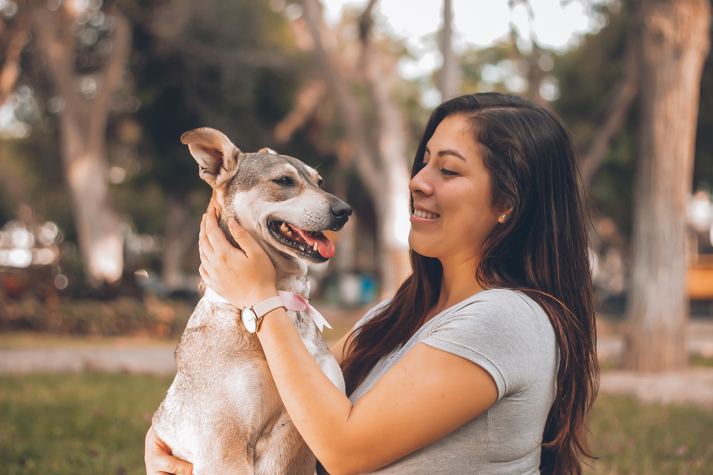
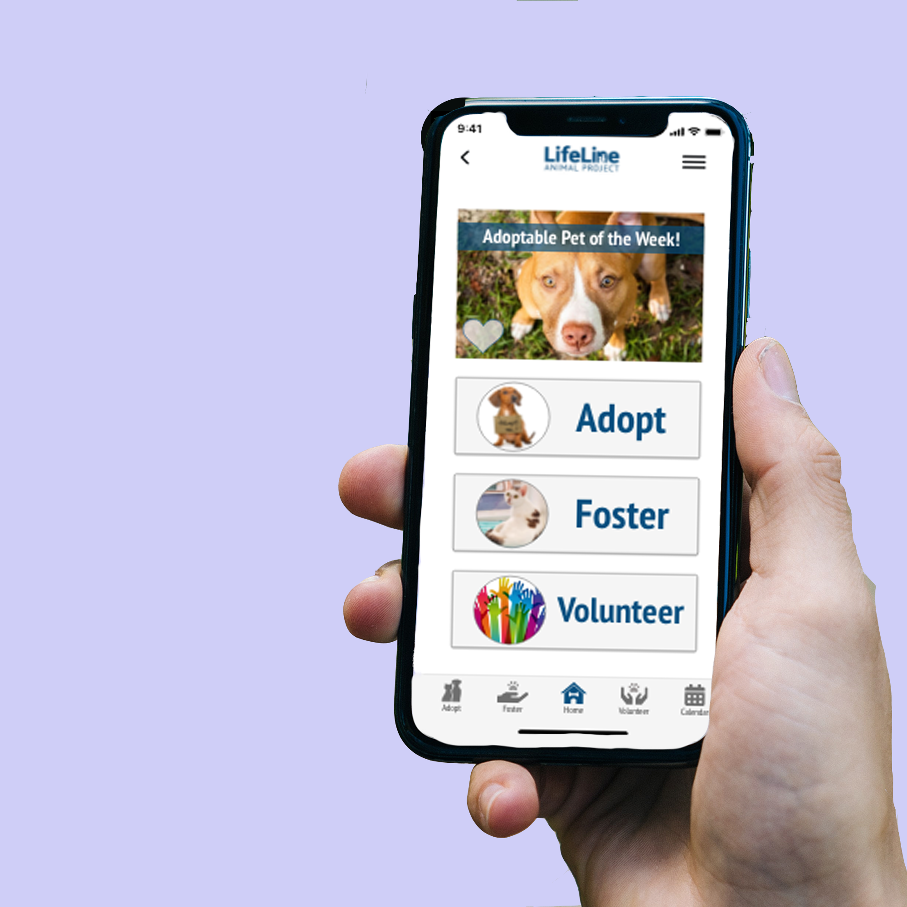

Lifeline Animal Project is a non-profit, no-kill animal shelter in Metro Atlanta managing two county shelters: Fulton County Animal Services and DeKalb County Animal Services
The mission of Lifeline Animal Project is to create a sustainable no-kill community, by saving every healthy and treatable animal.
How?
Donate to the Community Center.
Adopt your new furry best friend.
Foster a homeless animal.
Spay/neuter your pet at a low-cost.
Volunteer to support Lifeline Animal Project
Research Question
How do community members discover and interpret the resources offered by Lifeline Animal Project?
Research Methodology
The design team conducted six fifteen minute interviews with pertient users, people who foster or adopted a dog from an animal shelter in the last six months. McKenzie wrote an online survey with 40 participents which inqured about the motivations for pet ownership and adoption. Niki interviewed Lifeline Animal Project to gain insight on how the animal shelter viewed their own goals and needs.
Proto Persona
Demographics
- Name: Alex
- Age: 20-25
- Relationship: Single
- Ocupation: Grocery Store Manager
Behaviors
- Loves animals and wants to be around them more often
- Enjoys outdoor activities and socializing
Wants
- A friendly cat to adopt.
- Easy adoption process, but through application.
- Wants to foster before adopting.
Concerns
- Would like to support a no-kill, non-profit, animal shelter.
- Will my potential pet and I be a good match?
Problem Statement
Communication between the shelter and the Metro-Atlanta community is a consistent challenge. Lifeline Animal project needs to create a long-lasting relationship with volunteers, foster parents, and potential pet owners in order to fulfill their mission of safely homing every animal in Metro Atlanta.
Ideation
After user research, our team brainstormed about useful features to improve communication between the shelter and the community. We found that matchmaking, placing the right animal with the right foster or adoption parent, is a neglected component in Lifeline Animal Project’s current communication practices.
Mobile applications are convenient and easy-to-use.
Wouldn’t it be fun to swipe and match with your favorite furry friend?
Perhaps, a quick quiz to match the perfect pet with their lifestyle?
An in-app messaging feature would improve response time.
Prototype
A/B Testing
The final iteration of the main page combined the most-liked elements from these three designs.
- Clean and specific navigation from A
- Layout of B with Menu bar
- Pet of the Week feature from C

Home screen option A

Home screen option B